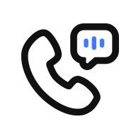

01
打前演练
说清目标、背景和双方角色。AI 进入具体场景，模拟追问与不同回应，提前练习怎么开场、怎么接话。
这通电话，我想……问清报价、交付时间与合作条件目标明确后，开始对练 ↗

微微打电话BUSINESS TRAINER看看怎么练 ↗正在陪你练习
产品界面示意 · 非真实通话
想清楚 ↗ 说出来 ↗ 看见进步
YOUR NEXT CALL, BETTER PREPARED.01 / HOW IT WORKS
把沟通拆成三个步骤。
每一步，都帮你更接近想要的结果。
说清目标、背景和双方角色。AI 进入具体场景，模拟追问与不同回应，提前练习怎么开场、怎么接话。
准备好了，再拨打真实电话。取得必要授权后保留录音，需要时主动转写，让沟通里的细节有处可查。
选择实战电话，手动关联演练。围绕沟通目标回顾实际表现，从五个维度看清优势与值得改进的地方。
02 / REAL-LIFE SCENARIOS
不背通用话术。
围绕你的目的，练一场具体的沟通。
AI 扮演招聘方，从自我介绍继续追问项目经历，让你练习把个人贡献讲得更具体。
清楚介绍项目经历，确认岗位要求与下一步安排。
关注细节、会继续追问的招聘方
✦ 场景示例可切换；此页面不连接麦克风或 AI 服务。
表达已经很清楚。下次可以在结束前，
再确认一次具体交付日期。
03 / LEARN FROM EVERY CALL
把演练时的目标，带到真实沟通的复盘里。
看见这次说对了什么，也找到下一次的着力点。
在实战电话中选择录音，主动发起转写与复盘。
手动选择对应演练，围绕当时设定的目标分析。
目标达成、表达清晰、信息完整、回应能力、沟通推进，配合理由与建议一起回顾。
04 / GOOD TO KNOW
演练时由 AI 扮演你设定的沟通对象，不会拨打真实电话。实战拨打是独立操作，需要你主动确认。模拟中的回应、报价与承诺不代表真实通话对象。
由你选择关联。在复盘中选择实战电话，再手动选择对应的演练并确认。挂断电话或完成转写，不会自动生成对照复盘。
AI 对话演练为会员功能。当前方案为每位用户每日累计最多 15 分钟，北京时间次日重置。实战呼叫、录音转写与复盘也受会员权益和每日额度限制，具体以 App 内说明为准。
语音转写及 AI 结果可能出现遗漏或错误，重要金额、日期与约定请结合原始录音和实际情况核实。
MAKE YOUR NEXT CALL COUNT.
把准备留在拨号前，把收获留在沟通后。
选个场景，看看怎么练 ↗